【机械前沿】一个2kg的小装置让自行车秒变电动车，革了所有电动车的命！
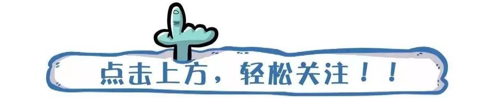
遇到刮大风的天气，各位骑车在路上的小伙伴可得注意安全了。。
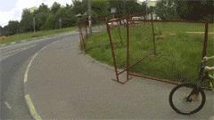
其实说到骑车，还是挺受人喜欢的，锻炼的同时，主要还能装X呀。。
不过要是骑个长距离，如果再碰到长坡。。那叫一个心累啊。。。
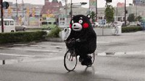
不过话说回来有了这款酷炫吊炸天的自行车配件——
add-e
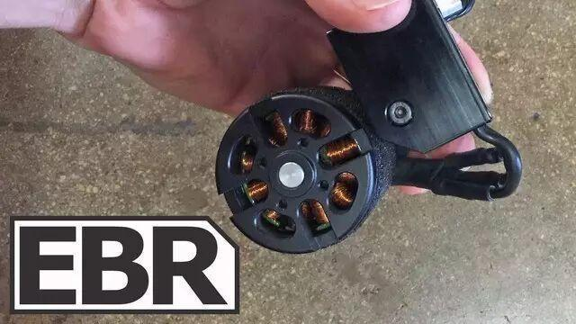
 情 况 可 就 不 一 样 了。。。
情 况 可 就 不 一 样 了。。。
它 能 瞬 间 将 任 何 自 行 车 变 成 电 动 车！
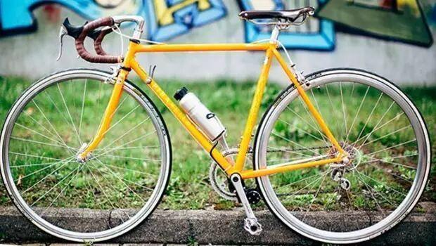
使用方法也很简单——
你只需将驱动装置安到你的自行车上
▼
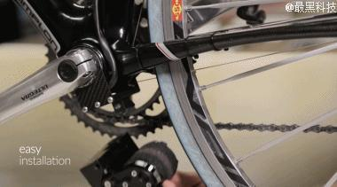
再装上这个像水壶一样的电池
▼
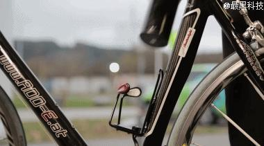
打开按钮，走你~
▼
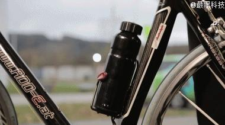
add-e属于助力装置，它可以使你骑行变得超便捷，并且不需要对你的爱车做任何改造。
你可以通过手机app调节功率输出大小，最高可提高到600w。
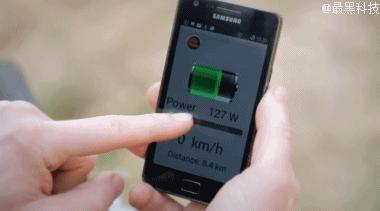
当然你也可以通过旋钮手动调节功率输出大小。
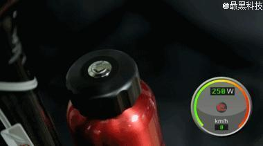
时速最高可达45km，上个坡什么的完全木有问题。
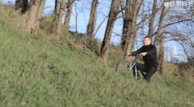
至于安全问题你完全不必担心，当速度达到峰值，add-e会会自动切断助力。
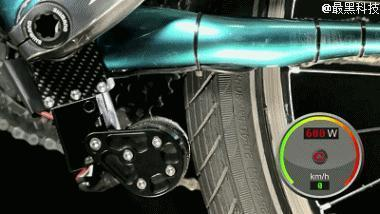
同时，add-e电池也能到做百分百防水。
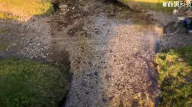
add-e全套重量仅200g，不会对骑行造成什么负担。。这是相对于其他类似产品最大的优势
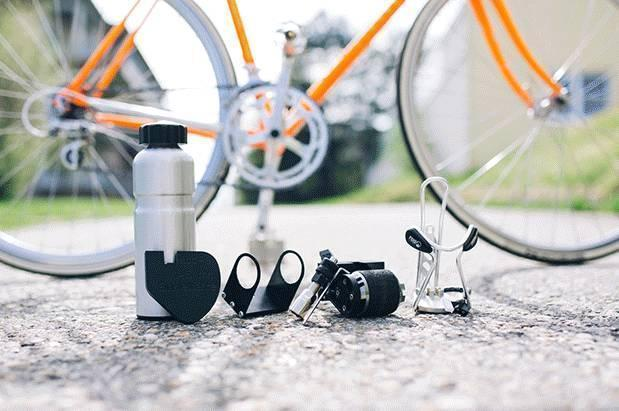
温馨提示：在wifi状态下观看，留着流量学知识
下面一起来看看add-e的详细介绍视频吧——
信息部 张凤乔